基于Python语言
软件基于当下流行的Python语言实现，源代码完全开放。开发人员可以根据需求修改源代码使用DAPC。

使用简便，功能丰富
DAPC接收简单的命令行参数执行相应的音频处理操作，不论是开发人员还是普通用户，都可轻松上手使用。
高效率，高质量
软件基于用C语言实现的Numpy库与Scipy库，并且包含了Sonic Library和FFmpeg，性能优良。
应用场景广泛
软件可以应用于Web后端，客户端后台，或者是嵌入式系统，具有良好的跨平台性和多元的应用场景。
软件基于当下流行的Python语言实现，源代码完全开放。开发人员可以根据需求修改源代码使用DAPC。
DAPC接收简单的命令行参数执行相应的音频处理操作，不论是开发人员还是普通用户，都可轻松上手使用。
软件基于用C语言实现的Numpy库与Scipy库，并且包含了Sonic Library和FFmpeg，性能优良。
软件可以应用于Web后端，客户端后台，或者是嵌入式系统，具有良好的跨平台性和多元的应用场景。